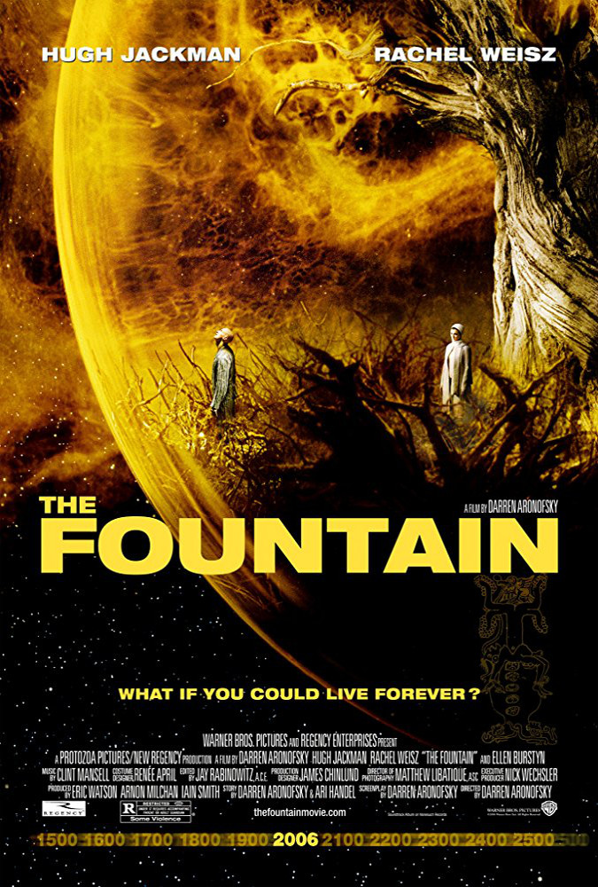
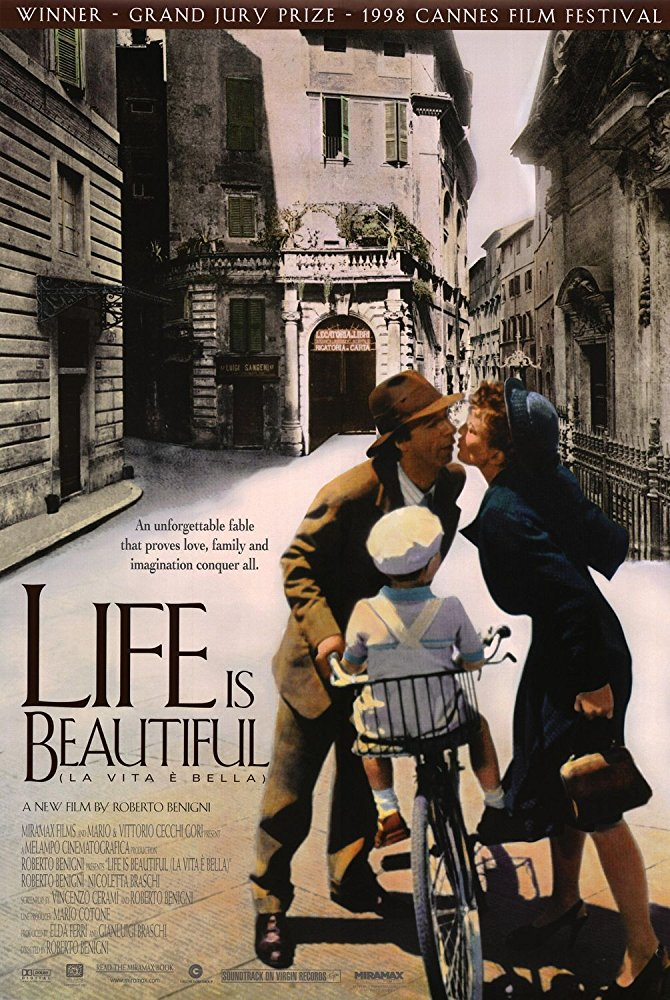
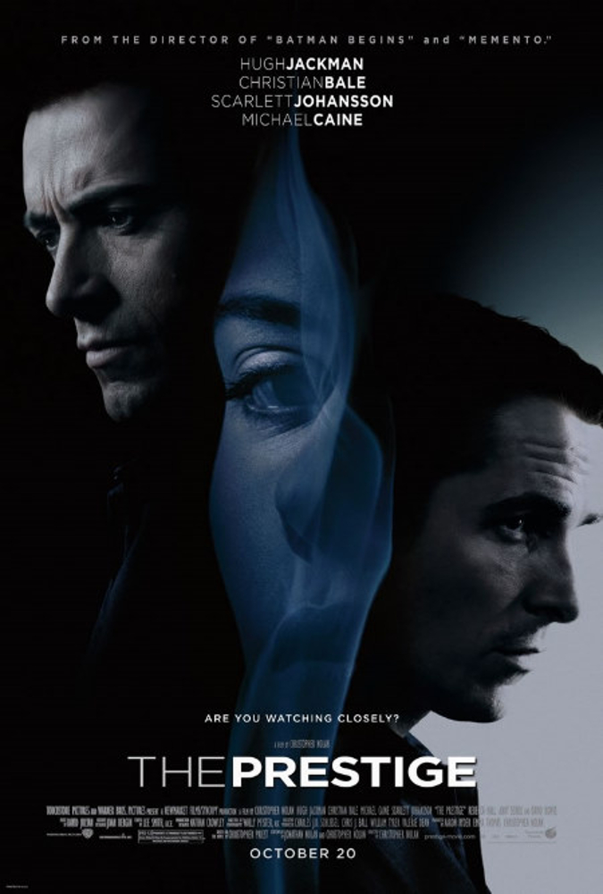

Gregory Burgess
Presently a Le Wagon-eer
As with Le Wagon's mission, I'm a creative person bolstering techincal skiils! :D
Here is a link to something I haven't decided about yet! An empty link still brimmming with potential!My Favorite Movies
|  |
An either incredibly cheesy movie that will put you to sleep, or a mind-bending treatise on the enlightmenment, conciousness, mortality, and love and meaning across-time. The film follows a Spanish conqistador searching for the tree of life for his queen to free Spain, a modern day doctor obsessed with saving his dying wife, and a monk travelling through space in a spaceship/bubble...with a tree...toward nebulae and dying star about to explode - yes all three. Prepare to weep or to sleep. Oh, and Darren Aronofsky used petri dishes with drops of various liquids filmed at close range to create the effects in space, not cgi - mesmerizing |
|  |
A man tries to make life beautiful in a concentration camp for a young child. A wee bit of dellusion in all of us is sometimes having the vision to perservere. |

|
I'm sure this film already has a huge following. Dreams nested in dreams like a while loop gone wrong - or right. A fractaling Jungian dreamscape. Worth watching again, and again, and again... |
|  |
Christopher Nolan again. Observations on human nature and magic as illusion and reality. Again, another time-mind-f that Christopher Nolan is so good at creating. Great film, and an amazing book. |